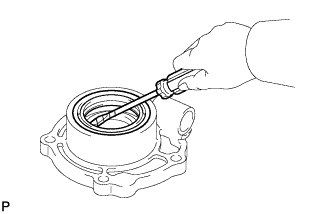
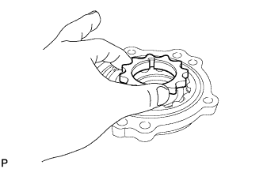
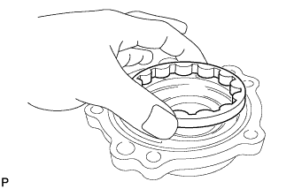
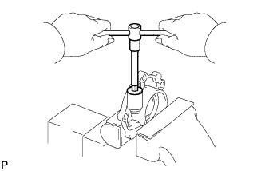
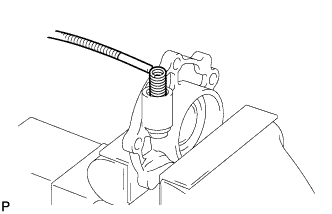
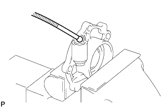
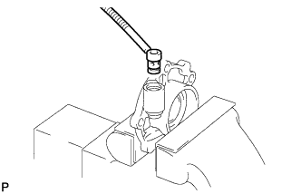

OIL PUMP > DISASSEMBLY |
| 1. REMOVE TRANSMISSION OIL PUMP COVER OIL SEAL |
 |
Using a screwdriver, pry out the oil pump cover oil seal.
| 2. REMOVE MANUAL TRANSMISSION OIL PUMP DRIVE ROTOR |
 |
Remove the oil pump drive rotor.
| 3. REMOVE MANUAL TRANSMISSION OIL PUMP DRIVEN ROTOR |
 |
Remove the oil pump driven rotor.
| 4. REMOVE NO. 1 MANUAL TRANSMISSION OIL PUMP COVER PLUG |
 |
Using a hexagon wrench, remove the oil pump cover plug.
| 5. REMOVE TRANSMISSION OIL PUMP COVER COMPRESSION SPRING |
 |
Using a magnetic finger, remove the compression spring.
| 6. REMOVE TRANSMISSION OIL PUMP COVER BALL |
 |
Using a magnetic finger, remove the ball.
| 7. REMOVE OIL PUMP RELIEF VALVE SEAT |
 |
Using a magnetic finger, remove the valve seat.
| 8. REMOVE MANUAL TRANSMISSION OIL PUMP COVER O-RING |
Remove the O-ring from the valve seat.